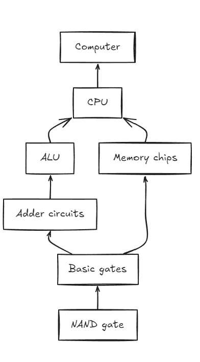

Nand2Tetris Part 1: Hardware
Learn to build basic computer hardware with Nand2Tetris: logic gates, ALU, memory, and assembly language
By Sukalyan RoyPublished Updated 11 min read

After many many months and years of procrastinating, i finally started this book, along with a friend from college, both of us doing it separately at our own pace. And Atleast for the first few chapters so far, it has been a torturous but fun experience.
https://github.com/Sukalyan2003/Nand2Tetris ← Here is the repo
TL;DR #
-
Nand2Tetris starts with one primitive gate and slowly builds a computer upward.
-
The hardware part makes abstractions feel physical: gates become adders, adders become ALUs, and memory becomes state.
-
The biggest lesson is that computers are layered, not magical.
-
This post covers my first pass through the hardware side.
Project status
This is Part 1 of my Nand2Tetris notes. The focus here is the hardware path. The software/compiler/OS layers should come later as separate posts, because they deserve their own space.
Chapters #

01 Logic Gates #
This covers most of the really basic things one would see in any Computer architecture class, or rather even in digital electronics class. Though im sure the HDL implementations do happen only in the architecture class.
This was surprisingly nontrivial for some of the arrangements, due to the getting used to a different way of writing HDL.
Before this my only exposure to HDL had been the VHDL language used in the Xilinx software in my College, and that is a blog worthy experience in and of itself.
Apart from getting used to this slightly different way of writing stuff, I realized that in some cases, you just cannot be clever, and you have to just sit and type out a lot of lines. (Looking at you, 16 bit circuits).
So far so good, it was fun refreshing up these circuits.
02 ALU #
Lots of lines again for the 16bit adder but pretty short and sweet code for the rest of the adders and incrementers.
Then comes the beast called ALU.
The arithmetic logic unit or ALU, is the central part of any CPU. The part which actually does the math.
The simple math of adding, subtracting, checking for zeroes and so on, which seems simple, but can do a lot of magical things when used right.
It took a lot of tries and a very close analysis of the specifications in the book before i could make it work. By this point i was having second thoughts about working on this, and i actually left it for a few weeks in the middle due to the sheer amount of frustration i felt with the ALU.
Anyhow, all combined with just 6 control bits, this ALU can do 18 operations integral for a CPU to function.
03 Memory Elements #
Memory. Implementing this using flip-flop logic in college was one of the most incomprehensible things to me, but since the authors of the book had graciously provided a D Flip-flop for us, it made the work trivial.
Through the combination of Multiplexers, simple logic, and building on top of smaller memory units, i kept on building larger and larger memory, until i finally reached the 16k size.
Then by writing out the Program counter, my work for this chapter was done.
The truth table for the Program counter is the following:
in the order Reset | load | inc:
000 - in
001 - in+1
010 - in load
011 - in load
100 - 0
101 - 0
110 - 0
111 - 0and it took a register, an 8 way 16bit mux and a 16bit incrementer to get it working.
04 Assembly Practice #
This is where things get even more exciting. My first taste of assembly.
Given that this is a toy language, and not as complex as real x86 or ARM assembly, it still is a very powerful language and you can do a lot with it.
I started off by understanding the different syntax and semantics of this language and it made me realize just how nontrivial writing assembly can be. The thinking process itself, with all it’s separation between fetching and storing the value and the actual operation, is a paradigm shift from the programming we do with more high level languages, even if those languages themselves seem low level to use compared to even higher level modern stuff.
The following is my exact notes as I was working on it
-
The currently selected Register of the RAM is called M.
-
The data register of CPU is named D. Stores a 16bit value
-
Address register named A. Can work both as Data and Address register.
Syntax for the Hack Machine code
-
@xxx sets A=xxx. But it has some side effects too.
-
M=xxx
-
Selected instruction in the ROM = xxx So, depends on the command that follows it, A can act as either Data or Address register. And even in the Address part, A can either access the Data memory or the instruction memory.
-
-
if we want the program flow to jump to a specific location in the Instruction memory, then we set @xxx and then write 0;JMP for unconditional branching;
to replicate something like if D==0 goto xxx, you write D;JEQ -
Variables: These are written as @variable where the name can be anything.
The Hack specification includes 16 inbuilt symbols going from R0 to R15. These are called virtual registers The symbols SCREEN and KBD are special keywords for the screen and keyboard respectively. They have a fixed value in the memory. -
Label symbols LOOP STOP END
always write them within () like (STOP) or (LOOP) -
The instruction memory is 0 indexed
When a program is loaded, the nth line of the program is loaded into the address n in the instruction memory -
Always end a program with an infinite loop or it will move ahead and start executing anything it finds next in the memory.
Some experiments #
Let's start with some pseudocode for the examples of the book, then try to translate it into assembly language.
( This mostly contains the final version of the code, probably the same as the book as I am reading it whenever i get stuck)
Q1) Calculate the sum of first N Positive integers where R0 = N. Then store the Sum in R1.
Pseudocode:
initialize i = 1, sum = 0
Run a loop that checks if D > R0 then
goto STOP
loop: sum = sum + i
i = i + 1
goto loop
STOP:
R1 = sum
Then end the program.Now let's try to write the assembly
The code is in sum.asm. I’m using separate files as then i could import them into the Nand2Tetris IDE and run them.
Q2) : Implement the array accessing system in the Hack assembly
The example in the book uses the notations to set all array indices to -1, but I want to try something different. Add the current index into the array. and if that works, i'll try to add the sum of all n numbers so far.
This basically starts at R0 and accesses R1 number of indices from that start.
Pseudocode:
i = 0
LOOP
if(i == R1) then goto end
*(R0 + i) = i
i = i+1
goto LOOP
ENDSecond assigment #
The first multiplication one was easy but the IO one needs some planning first.
So, i'll do this in three steps.
Step 1: Read input from keyboard and set it to memory to learn about keyboard input.
Step 2: Create an arbitrary pattern in screen (just blacked it out.)
Step 3: Connecting the dots and finishing the assignment.
Now to start working on step 3, We name the file Fill.asm as specified.
Pseudocode:
Start outer loop
if KBD input == 0 then colour is white(0)
if KBD input != colour is black(1 or -1)
Start filling loop
Fill the 8192 memory words with colour value
Then goto repeat
Repeat go to beginning of outer loopAnd using this the code is complete.
05 Making the CPU #
Found this cool video that does something similar: https://youtu.be/Zt0JfmV7CyI?feature=shared
Note: Even after trying alot, nothing i did seems to work. So i'll just use some preexisting code and will try making this on a later date. This is only for the CPU. The rest i could do myself.
Basic stuff #
In this chapter, we make the CPU of the machine on which the assembler and everything of part two will be made.
The chapter starts with an explanation of the stored program concept.
Especially the Von neumann architecture, which specifies that the program and data are stored in the same memory and are treated the same way.
This means that the same hardware can act completely differently depending on the software and most of it's functionality is not hardcoded.
Physically, the memory is a linear sequence of addressable,fixed-size registers, each having a unique address and a value. Logically,this address space serves two purposes: storing data and storing instructions. Both the “instruction words” and the “data words” are implemented exactly the same way—as sequences of bits.
In some variants of the von Neumann architecture, the data memory and the instruction memory are allocated and managed dynamically, as needed, within the same physical address space. In other variants, the data memory and the instruction memory are kept in two physically separate memory units, each having its own distinct address space.
When the CPU works faster than the rate at which data can be fetched from the memory, the CPU will have to wait for the data to be fetched. This is called the Von Neumann bottleneck. This is also called Starvation.
To fix this we have an on-CPU memory called the cache. And beyond that we have the registers. Which is a very small amount of memory that is directly on the CPU.
To avoid learning about the specific engineering of each IO device, everything is abstracted into a memory mapped IO. This means that every IO device is mapped to a specific memory address, which is constantly synchronized to check for changes.
The Hack specification #
Remember to use the BUILTIN Chips for the ROM32K and RAM16K
-
16bit architecture with two memory spaces: data memory and instruction memory. And two specific IO devices, the screen and the keyboard.
-
The CPU consists of the ALU from project 2 and three registers A, D and PC.
-
The instruction memory is one of the prebuilt ROM32K
-
The data memory is one of the prebuilt RAM16K, along with the given Screen and Keyboard memory maps.
-
The Topmost level is the Computer Chip, which is connected to the screen and the keyboard. It also has a reset bit.
When reset==0 The stored program executes When reset==1 The execution restarts TO start execution, set the rest first to 1 and then to 0.
06 Writing the assembler #
A two-pass assembler for the Hack assembly language, converting .asm files to .hack binary files. This implementation translates Hack assembly instructions into 16-bit binary machine code.
Overview #
This assembler processes Hack assembly language files and generates binary machine code. It handles three types of instructions:
-
A-instructions: Address instructions (
@value) -
C-instructions: Computation instructions (
dest=comp;jump) -
L-instructions: Label declarations (
(LABEL))
The assembler uses Python for easier syntax and readability, diverging from the C++ tutorials to avoid blind copying.
Specification #
https://drive.google.com/file/d/1S5MD3scFSlocH829_v1IJHIHKaVcEZc9/view
refer to the above charts for guidance. Not my chart, got it off youtube from this video
This clearly summarizes the entire specification as mentioned in the book. I suppose realizing this was a big part of this assignment, but even if i tried to, i'm just too lazy to make such a comprehensive chart.
I did go through the chapter and verify that it's accurate.
Implementation #
The assembler is implemented using a modular approach with separate Python files, each handling specific responsibilities:
HackAssembler.py - Main Assembler Module #
The main entry point that orchestrates the two-pass assembly process:
Features:
-
Command-line interface: Takes
.asmfile as argument -
Two-pass algorithm:
-
First pass: Builds symbol table from label instructions
-
Second pass: Translates all instructions to binary
-
-
Symbol resolution: Handles both numeric addresses and symbolic references
-
Output generation: Creates
.hackfiles with 16-bit binary instructions -
Error handling: Validates undefined symbols and instruction formats
Usage: python HackAssembler.py Prog.asm
Parser.py - Instruction Parser #
Handles reading and parsing of assembly source files:
Key Methods:
-
hasMoreLines(): Checks for remaining lines to process -
advance(): Moves to next valid instruction (skips comments and empty lines) -
instructionType(): Identifies instruction type (A, C, or L) -
symbol(): Extracts symbols from A and L instructions -
dest(),comp(),jump(): Parses components of C-instructions
Features:
-
Comment filtering: Automatically skips
//comments and empty lines -
Instruction validation: Ensures proper syntax for all instruction types
-
Symbol recognition: Handles predefined symbols (LOOP, STOP, END)
-
Component extraction: Breaks down C-instructions into dest, comp, and jump parts
Code.py - Binary Translation Module #
Translates assembly mnemonics to binary machine code:
Translation Tables:
-
DEST_TABLE: Maps destination mnemonics to 3-bit codes (M, D, A, MD, AM, AD, AMD)
-
COMP_TABLE: Maps computation mnemonics to 7-bit codes (includes both A and M variants)
-
JUMP_TABLE: Maps jump conditions to 3-bit codes (JGT, JEQ, JGE, JLT, JNE, JLE, JMP)
Key Methods:
-
dest(mnemonic): Returns 3-bit binary code for destination field -
comp(mnemonic): Returns 7-bit binary code for computation field -
jump(mnemonic): Returns 3-bit binary code for jump condition
Features:
-
Complete mnemonic coverage: Supports all Hack assembly mnemonics
-
A/M register handling: Separate codes for A-register and M-memory operations
-
Error validation: Raises exceptions for invalid mnemonics
Assembly Process #
Two-Pass Algorithm #
-
First Pass (Symbol Table Construction):
-
Scans through all instructions
-
Records label positions (L-instructions) in symbol table
-
Maintains ROM address counter for proper label addressing
-
-
Second Pass (Code Generation):
-
Translates A-instructions to 16-bit binary addresses
-
Converts C-instructions to 16-bit binary (111 + comp + dest + jump)
-
Resolves symbols using the symbol table from first pass
-
Binary Instruction Format #
-
A-instruction:
0vvvvvvvvvvvvvvv(15-bit address/value) -
C-instruction:
111accccccdddjjj(3-bit prefix + 7-bit comp + 3-bit dest + 3-bit jump)
Potential Future Improvements (Not done yet) #
Enhanced Error Handling
-
Line number reporting: Show exact location of syntax errors
-
Detailed error messages: Provide specific guidance for common mistakes
-
Symbol validation: Check for undefined or duplicate symbols
-
Instruction validation: Verify proper mnemonic usage
File Management
-
Batch processing: Handle multiple
.asmfiles at once -
Directory operations: Process entire folders of assembly files
-
Output customization: Allow custom output file names and locations
-
Backup creation: Optional backup of existing
.hackfiles
Development Features
-
Debug mode: Verbose output showing symbol table and translation steps
-
Assembly listing: Generate annotated output showing original and binary code
-
Performance optimization: Faster parsing for large assembly files
Also this was the one and only section where i had to take some help from AI to figure out some parts. A goal is to understand it better while working on the future improvements.
Conclusion #
So that wraps up the hardware portion of the Nand2Tetris Course. The software part is much much more intense that this and i haven’t started working on it yet.
Stay tuned for the post on that.
Until then, see you in other posts!